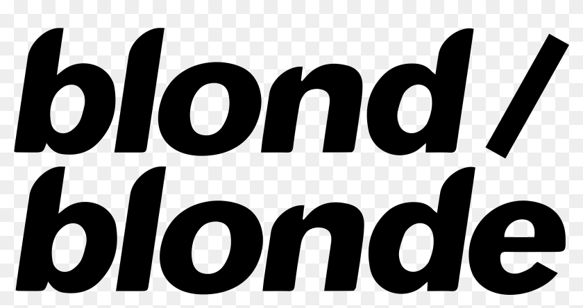
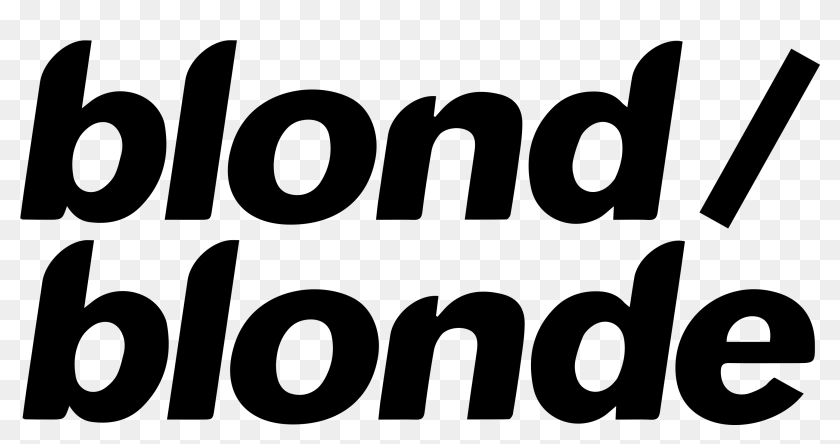

Blonde


 

After a four year hiatus, Frank Ocean dropped his second studio album, Blond/Blonde, in 2016. Leading up to this, Ocean pulled another record stunt by dropping his visual mixtape, Endless, the day before. This record featured heavy experimental works that were more melodic than lyrical, with legendary songs such as Whither and a cover of At Your Best in honor of Aaliyah that is chilling and timeless. The next day, the studio album Blond was dropped.
Blond, also known as Blonde, showed Ocean's intense skills as a songwriter. The album can be referred to as Blond or Blonde, a reference to Ocean's relationship with bisexuality. They are the french masculine and feminine words for blonde. The record is packed with beautiful musical components including piano, guitar, and electronic work, along with some legendary features. Influences span from The Beatles to The Carpenters to The Beach Boys and featured artists include Pharrell, Andre 3000, Jonny Greenwood of Radiohead, and Elliott Smith. The album transcended previous understanding of genre, and created a sound unlike any other. It became one of the most respected albums ever, certified platinum in 2018, and joining Rolling Stone's list of 500 greatest albums of all time.